TP Veeam : préparer le lab et installer la Veeam Software Appliance¶
Résumé
Ce premier TP construit le laboratoire utilisé par tout le parcours : trois machines virtuelles branchées sur le LAN du TP pfSense. L'appliance Veeam vbr (le serveur de sauvegarde, livré par Veeam sous forme d'ISO Linux durci), un serveur de fichiers Windows srv-fichiers (la donnée à protéger, et la machine qui porte la console Veeam), un serveur Linux srv-debian (une seconde donnée à protéger).
On installe l'appliance, on déroule son assistant de configuration (réseau, heure, mots de passe conformes à la politique STIG, authentification multifacteur), on se connecte à l'interface web, on installe la licence, puis on initialise le compte Security Officer. On finit par la console Windows, la vérification du lab et un instantané de toutes les machines.
| Propriété | Valeur |
|---|---|
| Difficulté | Débutant à intermédiaire |
| Durée estimée | 4 h, dont environ 1 h d'attente (installation de l'appliance, téléchargements, mises à jour) |
| Version décrite | Veeam Software Appliance 13.1.2.57 (octobre 2026), Windows Server 2025, Debian 13 |
| Place dans le parcours | Partie 3 sur 7 du parcours Veeam Backup & Replication |
| Dernière mise à jour | 2026-11-02 |
Convention de lecture
Chaque action précise la machine sur laquelle elle se fait :
| Repère | Machine |
|---|---|
| 🖥️ | PC hôte (l'hyperviseur : création des VM, réseaux, instantanés) |
| 🌐 | Navigateur web connecté à l'appliance (Edge sur srv-fichiers, ou le PC hôte en 192.168.19.1) |
| 🪟 | srv-fichiers (Windows Server 2025) |
| 🐧 | srv-debian (Debian 13) |
| 📦 | Écran de la VM vbr (console de l'appliance) |
Les menus et boutons sont écrits en anglais, comme à l'écran, avec une traduction quand c'est utile.
1. Vue d'ensemble¶
1.1 Ce qu'on construit¶
| Machine | Rôle | Adresse |
|---|---|---|
pfsense-19 |
Passerelle, NAT et DNS du LAN (TP pfSense) | VIP 192.168.19.21 |
vbr |
Serveur de sauvegarde : Veeam Software Appliance 13.1 | 192.168.19.55/24 |
srv-fichiers |
Serveur de fichiers Windows, futur dépôt n° 2, console Veeam | 192.168.19.22/24 |
srv-debian |
Serveur Linux à protéger | 192.168.19.170/24 |
| PC hôte | Navigateur (variante) | 192.168.19.1 |
Le serveur de sauvegarde est une appliance Linux livrée complète : ni licence Windows, ni base de données, ni pare-feu Windows à configurer pour lui.
Passerelle et DNS de toutes les VM : 192.168.19.21. Le schéma du lab, le plan d'adressage, les comptes et mots de passe et le dimensionnement sont détaillés sur la page d'accueil du parcours : la garder ouverte pendant le TP.
1.2 Les comptes utilisés dans cette partie¶
| Où | Compte | Mot de passe |
|---|---|---|
Appliance vbr (interface web, Host Management, console Windows) |
veeamadmin (nom imposé) |
PoPoPo000@@@Lab + code MFA (Host Management) |
Appliance vbr (Security Officer) |
veeamso |
PoPoPo111@@@Lab à l'assistant, remplacé à la première connexion par PoPoPo555@@@Lab + MFA |
| Phrase secrète de sauvegarde de configuration | — | PoPoPo666@@@Lab |
srv-fichiers |
Administrateur |
Popopo222@@@ |
srv-debian |
user |
Popopo333@@@ |
1.3 Prérequis¶
- Un PC avec 32 Go de RAM (profil confortable) ou 16 à 24 Go (profil minimal, voir le dimensionnement), environ 150 Go libres sur un SSD, et la virtualisation matérielle activée dans le BIOS/UEFI.
- Un hyperviseur : VMware Workstation, VirtualBox ou Proxmox VE.
- Le réseau LAN du TP pfSense en service : la VM
pfsense-19allumée, qui répond sur192.168.19.21(voir l'étape 2). - Un téléphone avec une application d'authentification (Microsoft Authenticator, Google Authenticator, FreeOTP…) : indispensable dès l'étape 6.
- Les ISO et la licence de l'étape 3.
- Les parties 1 et 2 lues (ou en cours de lecture pendant les longues attentes).
Pendant les attentes
L'installation de l'appliance et celles de Windows et de Debian peuvent tourner en parallèle si le PC a assez de mémoire. Profiter des attentes pour lire les parties 1 et 2.
2. Préparer le réseau¶
Les trois VM se branchent sur le même réseau LAN que le cluster pfSense du wiki : 192.168.19.0/24, passerelle et DNS 192.168.19.21 (la VIP du cluster). Ce réseau n'a pas de serveur DHCP : toutes les adresses sont saisies à la main.
Pourquoi réutiliser le réseau du TP pfSense ?
pfSense fait office de box du lab : il donne l'accès à Internet (NAT) et répond aux requêtes DNS. L'appliance en a besoin pour télécharger ses mises à jour, Windows pour installer la console, Debian pour ses paquets. Réutiliser le TP évite de reconstruire un routeur.
2.1 Vérifier le LAN¶
- 🖥️ Allumer
pfsense-19(etpfsense-20si le cluster est en place). Ne rien y modifier. -
🖥️ Vérifier que la VIP répond. Depuis un terminal du PC hôte (sous VMware et VirtualBox, il a l'adresse
192.168.19.1sur le LAN) :
Le LAN est le réseau VMnet19, de type Host-only, créé dans Edit > Virtual Network Editor pendant le TP pfSense (sous-réseau 192.168.19.0, masque 255.255.255.0, option Connect a host virtual adapter to this network cochée : le PC hôte reçoit 192.168.19.1). Chaque VM de ce TP aura une carte réseau en Custom : VMnet19.
Le LAN est le réseau privé hôte (host-only) 192.168.19.0/24, créé dans le gestionnaire de réseau pendant le TP pfSense (adresse de l'adaptateur 192.168.19.1, serveur DHCP désactivé). Chaque VM aura une carte réseau en Réseau privé hôte sur cet adaptateur.
Le LAN est un pont Linux sans port physique (par exemple vmbr19), créé dans Datacenter > nœud > System > Network pendant le TP pfSense. Chaque VM aura une carte réseau sur vmbr19. Le PC de l'administrateur n'est pas sur ce réseau : le navigateur du lab sera celui de srv-fichiers.
Pas fait le TP pfSense ?
Un seul pfSense suffit, ou n'importe quel routeur qui offre la passerelle et le DNS. À défaut, brancher les trois VM sur le réseau NAT de l'hyperviseur et garder les mêmes derniers octets (.55, .22, .170) dans le sous-réseau de ce NAT. La passerelle dépend de l'hyperviseur (par exemple .2 pour le NAT de VMware, .1 pour le « Réseau NAT » de VirtualBox : à vérifier dans les réglages réseau de l'hyperviseur). Il faut alors remplacer partout 192.168.19.x par les adresses de ce sous-réseau, y compris la passerelle et le DNS 192.168.19.21.
3. Télécharger l'ISO et obtenir une licence¶
3.1 Créer un compte Veeam et télécharger l'ISO¶
- 🖥️ Créer un compte Veeam gratuit sur veeam.com, puis télécharger l'ISO de la Veeam Software Appliance : dans le lab,
VeeamSoftwareAppliance_13.1.2.57_20261023.iso, soit 16 707 616 768 octets (environ 15,6 Gio). Prévoir un téléchargement long et vérifier la place sur le disque. - 🖥️ Télécharger aussi les ISO de Windows Server 2025 (évaluation de 180 jours, en français) et de Debian 13 (image netinst) : voir le tableau Logiciels à télécharger.
3.2 Obtenir la licence d'essai¶
- 🖥️ Depuis le compte Veeam, demander une clé d'essai de 30 jours de Veeam Data Platform (le fichier obtenu porte l'extension
.lic). La demande se fait au même endroit que le téléchargement. - 🖥️ Enregistrer ce fichier
.licdans un dossier connu. Ne jamais le publier (dépôt Git, capture d'écran, forum) : il contient le nom de son titulaire et une adresse électronique.
Sans clé, pas de sauvegarde
Sans licence, l'appliance fonctionne en Community Edition, qui ne permet que de restaurer des données existantes : aucune nouvelle sauvegarde ne sera possible. Le piège est expliqué dans la partie 2. Une clé d'essai est donc indispensable pour la suite du parcours.
4. Créer la VM vbr¶
4.1 Les exigences de l'appliance¶
Selon la documentation officielle (page « Backup Server », section « Linux-Based Backup Server (Veeam Software Appliance) ») :
| Élément | Exigence officielle | Utilisé dans le lab |
|---|---|---|
| Processeur | Processeur x86-64, 8 cœurs (vCPU) minimum. Pour un petit environnement de 5 charges de travail au plus, 6 vCPU et 16 Go de RAM suffisent | 6 vCPU |
| Mémoire | 16 Go plus 500 Mo par job simultané | 16 Go |
| Disque 1 | 240 Go minimum : système Veeam JeOS, logiciel Veeam Backup & Replication, base de configuration et cache de la restauration instantanée (480 Go sur SSD recommandés pour un petit environnement de production) | 240 Go |
| Disque 2 | 240 Go minimum : catalogues des systèmes de fichiers invités et sauvegardes. Tout disque supplémentaire présent à l'installation lui est ajouté (volume LVM unique) | 240 Go |
| Réseau | 1 Gbit/s ou plus pour la sauvegarde sur site, 1 Mbit/s ou plus hors site | 1 carte sur le LAN |
Un profil réduit à 4 vCPU et 8 Go de RAM, utilisable dans un lab à la mémoire comptée, est en dessous du minimum pris en charge : voir le dimensionnement. Les 2 disques peuvent être dynamiques (thin) : le lab n'a occupé qu'une trentaine de Go au départ. Veeam compte ici le Go comme 109 octets : un disque de 240 Go (ou 240 Gio) dans l'hyperviseur convient.
L'appliance s'installe en UEFI (ses disques sont partitionnés en GPT) : régler la VM dans ce mode, un démarrage BIOS classique ne convient pas. Le Secure Boot est pris en charge et recommandé (Veeam l'impose pour son modèle de VM Hyper-V) ; pour une installation depuis l'ISO, il reste facultatif. Il est activé sur la VM vbr de ce TP.
Pourquoi deux disques ?
Le premier héberge le système et le logiciel Veeam, le second les sauvegardes (le dépôt par défaut, Default Backup Repository, y est créé). Le séparer évite que des sauvegardes volumineuses remplissent le disque système.
4.2 Créer la machine virtuelle¶
- 🖥️ File > New Virtual Machine…, choisir Custom (advanced), puis I will install the operating system later.
- Système invité : Linux, version Rocky Linux 64-bit si elle est proposée, sinon Red Hat Enterprise Linux 9 64-bit.
- Nom :
vbr. Processeurs : 6 (1 processeur, 6 cœurs). Mémoire : 16384 Mo. - Réseau : Use host-only networking, puis après création, dans les réglages, Network Adapter > Custom : VMnet19.
- Créer un premier disque de 240 Go (décocher Allocate all disk space now, choisir Store virtual disk as a single file), puis ajouter un second disque identique (Add > Hard Disk).
- CD/DVD > Use ISO image file : choisir l'ISO de l'appliance.
- Options > Advanced > Firmware type : choisir UEFI. Cocher aussi Enable secure boot (recommandé, facultatif).
- 🖥️ Machine > Nouvelle : nom
vbr, ISO de l'appliance, type Linux, version Red Hat (64-bit). Cocher Passer l'installation automatique si l'assistant la propose. - Mémoire : 16384 Mo, processeurs : 6, cocher Activer EFI (OS spéciaux uniquement).
- Disque : créer un disque VDI de 240 Go, alloué dynamiquement. Une fois la VM créée, ouvrir Configuration > Stockage et ajouter un second disque identique.
- Configuration > Réseau > Carte 1 : Mode d'accès réseau : Réseau privé hôte, sur l'adaptateur du LAN du TP pfSense.
- Si la version de VirtualBox le propose, la case Activer Secure Boot se trouve dans Configuration > Système > Carte mère, sous Activer EFI : la cocher est recommandé, mais facultatif pour ce TP. Les libellés peuvent varier légèrement selon la version de VirtualBox.
- 🖥️ Create VM : General : nom
vbr. OS : l'ISO de l'appliance, type Linux, version 6.x - 2.6 Kernel. - System : Machine
q35, BIOSOVMF (UEFI), cocher Add EFI Disk. Laisser Pre-Enroll keys coché active le Secure Boot, que l'appliance prend en charge ; le décocher le désactive. SCSI Controller :VirtIO SCSI single. - Disks : un premier disque de 240 Go, puis Add un second de 240 Go. L'allocation dynamique dépend du stockage choisi (LVM-thin, ZFS, fichiers qcow2).
- CPU : 6 cœurs, type
host. Memory : 16384 Mo. - Network : Bridge
vmbr19, modèle VirtIO.
Prendre de l'avance
Ne pas démarrer la VM tout de suite si les VM srv-fichiers et srv-debian ne sont pas créées : l'installation de l'appliance sera longue et se déroule seule, autant lancer les trois installations ensemble (voir les étapes 10 et 12).
5. Installer l'appliance¶
- 🖥️ Démarrer la VM
vbr. Le menu de démarrage de l'ISO s'affiche (en cas de Secure Boot, il démarre sans erreur). Appuyer sur Entrée pour entrer dans le menu d'installation.
Piège : l'entrée sélectionnée par défaut est « Reinstall »
Le menu propose deux entrées :
- Install : installation neuve, efface tout (y compris les sauvegardes locales) ;
- Reinstall : conserve les sauvegardes, efface les réglages et réinstalle le système.
L'entrée sélectionnée au départ est Reinstall. Sur une machine neuve, elle ne convient pas : il n'y a rien à conserver.
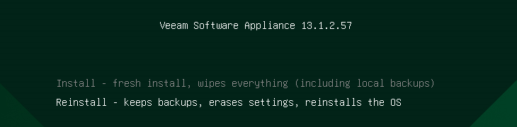
L'entrée Reinstall (en blanc) est sélectionnée par défaut.
- 📦 Appuyer sur la flèche haut pour sélectionner Install (« Install - fresh install, wipes everything (including local backups) »), puis sur Entrée.
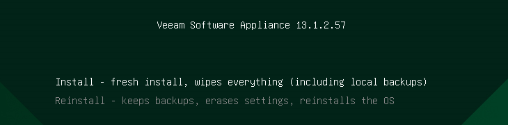
Après la flèche haut, Install est sélectionnée.
- 📦 Patienter quelques minutes : l'installeur graphique démarre. Il affiche une confirmation d'effacement des disques : « Proceeding with the installation will irreversibly wipe all data currently residing on the drives… ». Vérifier qu'il s'agit bien de la bonne VM, puis cliquer sur Yes.
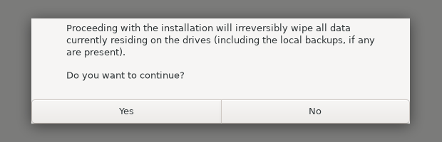
La confirmation d'effacement : sans danger sur une VM neuve.
- 📦 Laisser l'installation se dérouler seule : partitionnement, puis installation d'environ 774 paquets. Dans le lab elle a pris une trentaine de minutes, et jusqu'à 1 h selon la vitesse du disque. La VM redémarre toute seule à la fin.
6. L'assistant de configuration initiale¶
Au premier démarrage, après quelques instants, l'appliance affiche en mode texte (bandeau vert Veeam Host Management) l'Initial Configuration Wizard. Ses étapes, listées à gauche, sont : License, Hostname, Network, Time, Host Administrator, Security Officer, Summary.
Naviguer dans une interface texte
Pas de souris. Tab passe au champ ou au bouton suivant, Maj+Tab au précédent, les flèches déplacent la sélection dans une liste, Entrée valide. La barre du bas rappelle les touches utiles. Les captures du lab (écran de la VM) sont prises avec le clavier US de l'assistant : voir l'étape 6.2 pour passer en AZERTY.
6.1 Licence¶
- 📦 Sur l'étape License, sélectionner [Veeam End User License Agreement (EULA)] et appuyer sur Entrée pour lire le contrat, puis recommencer avec les autres documents si on le souhaite.
- 📦 Se déplacer avec Tab jusqu'au bouton [Accept] et appuyer sur Entrée.
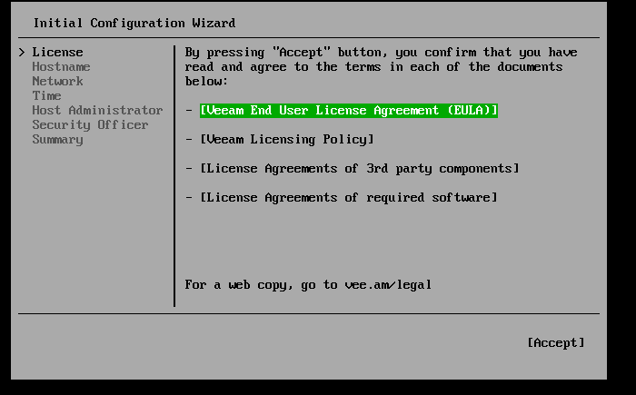
L'étape License : lire les contrats puis valider [Accept]. Il s'agit du contrat, pas de la clé de licence : celle-ci s'installe plus tard, dans l'interface web.
6.2 Nom d'hôte et disposition du clavier¶
- 📦 Sur l'étape Hostname, effacer le nom proposé avec Retour arrière et saisir
vbr. - 📦 Appuyer sur Ctrl+K (Keyboard) pour changer la disposition du clavier : taper
frdans le champ de recherche, sélectionner la disposition française (AZERTY) avec les flèches, puis [OK]. Le clavier AZERTY est alors actif pour les saisies suivantes. Les captures de ce TP montrent la disposition US d'origine.
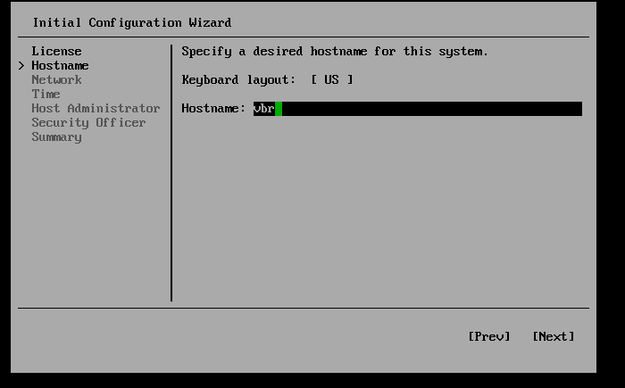
Le nom d'hôte vbr.
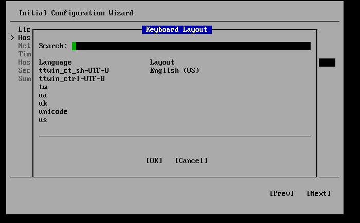
Ctrl+K ouvre la liste des dispositions : chercher fr pour l'AZERTY.
Choisir le clavier avant de taper les mots de passe
Les mots de passe contiennent des @. Avec un clavier mal réglé, ils seront saisis différemment de ce qui est affiché, et on ne pourra plus se connecter. Régler le clavier maintenant, puis cocher Show password (au besoin) pour vérifier ce qui est tapé.
- 📦 Valider avec [Next].
6.3 Réseau¶
- 📦 Sur l'étape Network, la carte (par exemple
enp1s0) essaie d'abord le DHCP, qui n'existe pas sur ce LAN. Sélectionner la carte, puis [Static]. -
📦 Remplir la fenêtre de réglages :
Champ Valeur IP4 address 192.168.19.55IP4 mask 255.255.255.0IP4 gateway 192.168.19.21DNS list 192.168.19.21,1.1.1.1 -
📦 Descendre sur [Apply], appuyer sur Entrée, puis [Next].
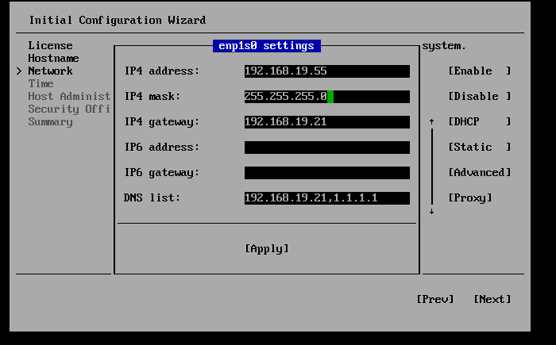
Les réglages statiques de la carte. Après [Apply], l'adresse est active : l'appliance répond au ping.
Relire chaque champ
Une faute de frappe dans l'adresse, le masque ou la passerelle oblige à reprendre la configuration réseau. Relire les quatre champs avant [Apply].
Vérifier tout de suite
Depuis le PC hôte, ping 192.168.19.55 doit répondre dès que l'adresse est appliquée. Dans le lab, il répondait sans perte.
6.4 Heure et fuseau horaire¶
L'étape Time propose par défaut le fuseau UTC et un serveur NTP (time.nist.gov dans le lab).
- 📦 Sélectionner [Change] à côté du fuseau, taper
Parisdans le filtre, choisir Europe/Paris puis [Select]. - 📦 Garder le serveur NTP proposé, puis [Next].
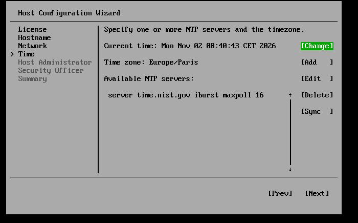
Fuseau Europe/Paris et serveur NTP : ce sont eux qui règlent l'heure de l'appliance.
Pourquoi l'heure exacte est-elle vitale ?
Les codes d'authentification multifacteur sont des codes TOTP (Time-based One-Time Password) : l'appliance et le téléphone calculent le même code à partir d'un secret partagé et de l'heure (un nouveau code toutes les 30 secondes). Si l'horloge de l'appliance dérive de plus de quelques dizaines de secondes, les codes sont refusés. L'appliance a donc besoin d'un serveur NTP joignable (d'où le DNS et la sortie Internet du TP pfSense) et du bon fuseau pour que les plannings de jobs soient à l'heure locale.
6.5 Compte administrateur et politique STIG¶
L'administrateur de l'appliance se nomme obligatoirement veeamadmin (nom imposé, non modifiable). Il faut lui choisir un mot de passe conforme à la politique DISA STIG, qui est stricte.
-
📦 Sur l'étape Host Administrator, vérifier la disposition du clavier, puis saisir le mot de passe dans le champ Password. Les essais du lab illustrent les trois règles :
Essai Résultat Message Popopo000@@@refusé The password contains more than 4 characters of the same class consecutively.PoPoPo000@@@refusé The password is shorter than 15 characters.PoPoPo000@@@000refusé The password fails the dictionary check - it does not contain enough DIFFERENT characters.PoPoPo000@@@Labaccepté —
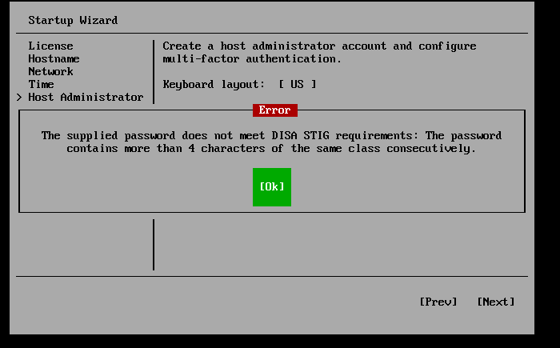
Popopo000@@@ : « opopo » fait cinq minuscules d'affilée.
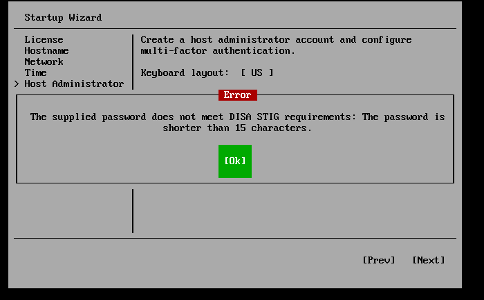
Variante PoPoPo000@@@ : seulement 12 caractères.
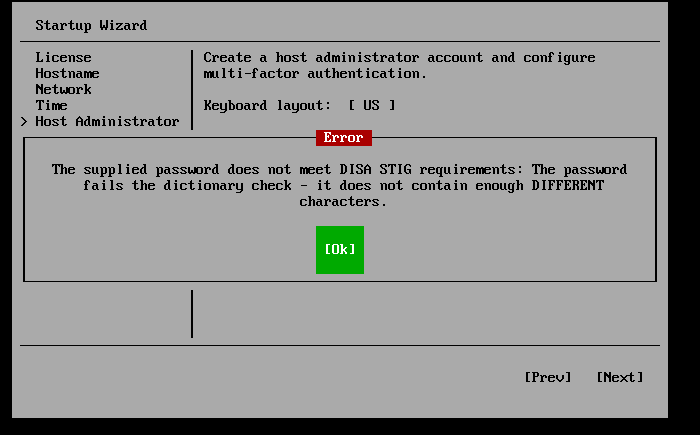
Variante PoPoPo000@@@000 : 15 caractères, mais pas assez de caractères différents.
Message d'erreur : The supplied password does not meet DISA STIG requirements
Le texte complet est The supplied password does not meet DISA STIG requirements: suivi de la règle enfreinte (voir le tableau). Cliquer sur [Ok], effacer le champ et retaper un mot de passe qui respecte toutes les règles à la fois : au moins 15 caractères, des majuscules, des minuscules, des chiffres et des caractères spéciaux, pas plus de 4 caractères de la même catégorie à la suite, et assez de caractères différents.
La variante retenue pour tout le parcours : PoPoPo000@@@Lab.
Pourquoi un mot de passe aussi contraignant ?
L'appliance applique des règles de durcissement du référentiel DISA STIG (le même que les administrations américaines). Un mot de passe long, varié et sans suites de même catégorie résiste mieux aux attaques par dictionnaire. C'est la contrepartie de la sécurité renforcée par défaut dont parle la partie 2.
6.6 Authentification multifacteur (MFA)¶
Après le mot de passe, l'appliance impose le MFA et affiche la fenêtre Configure Multi-Factor Authentication (MFA) en trois étapes : ouvrir l'application d'authentification, ajouter le compte, taper le code à usage unique.
- 🖥️ Sur le téléphone, ouvrir l'application d'authentification (Microsoft Authenticator, Google Authenticator, FreeOTP…) et choisir Ajouter un compte (compte « autre » / scanner un QR code).
- 📦 Dans la fenêtre, sélectionner [Show QR-code] et appuyer sur Entrée : un QR code s'affiche sur l'écran de la VM. Le scanner avec le téléphone. Appuyer sur Échap pour revenir à la fenêtre.
- 📦 Se placer dans le champ Step 3. Enter a one-time password provided by your app et saisir le code à 6 chiffres affiché par l'application, puis [Ok].
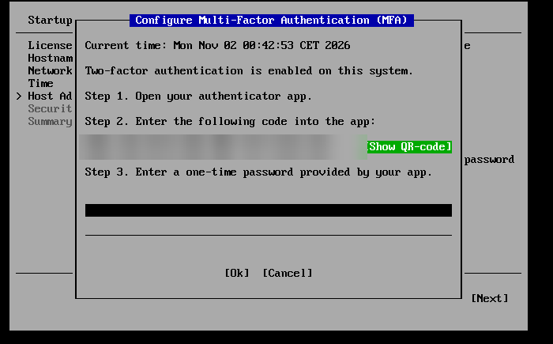
La fenêtre MFA. La clé secrète affichée sur la ligne du dessus a été floutée dans cette capture : elle est propre à chaque appliance. Le QR code (non reproduit ici) contient cette même clé.
Piège : le « O » ressemble à un « D » dans la police de la console
Si l'on préfère recopier la clé secrète à la main plutôt que scanner le QR code, attention : dans la police de la console, la lettre O ressemble à un D (dans le lab, un « O » a été lu « D » à la 15e position). Le téléphone calcule alors des codes faux, et l'appliance les refuse sans explication. Préférer le QR code.
Si le code est refusé
Vérifier d'abord l'heure du téléphone (réglage automatique) et du PC, puis attendre le code suivant (il change toutes les 30 secondes) et le retaper dans le bon champ : un Tab de trop déplace la sélection sur un bouton, et le code part au mauvais endroit.
6.7 Compte Security Officer¶
- 📦 L'étape suivante demande les identifiants du Security Officer : nom
veeamso, mot de passePoPoPo111@@@Lab(mêmes règles STIG). - 📦 [Next] pour continuer. Ne pas cocher Skip setting up Security Officer.
Pourquoi un second compte ?
Le Security Officer (officier de sécurité) approuve les actions sensibles demandées par l'administrateur, comme l'ouverture de l'accès root : c'est le principe des quatre yeux (Zero Trust) vu en partie 2. Dans une entreprise, ce rôle revient à une autre personne que l'administrateur. Dans le lab, c'est le même lecteur qui joue les deux rôles.
Ce mot de passe de départ n'est valable que pour la première connexion. On le change à l'étape 9.
6.8 Résumé et fin de l'assistant¶
- 📦 L'étape Summary récapitule la configuration : nom d'hôte
vbr, adresse192.168.19.55, serveur NTP, administrateurveeamadmin. Vérifier, puis sélectionner [Finish].
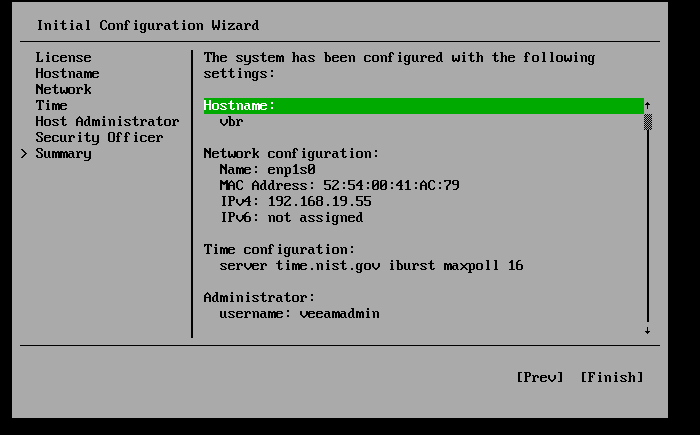
Le résumé avant d'appliquer la configuration.
- 📦 L'appliance applique alors la configuration en 14 étapes (génération du certificat, démarrage des services…). Compter quelques minutes (environ 3 minutes dans le lab, puis le temps que l'interface web réponde).
- 📦 À la fin, l'écran final affiche les adresses d'accès. Les noter, ainsi que les empreintes de certificat (Certificate thumbprint) :
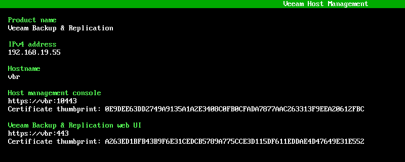
Host Management sur le port 10443, l'interface web sur le port 443, chacun avec son empreinte (SHA-256). Celle de l'interface web (A263ED…E552 dans le lab) servira à l'étape 11.
Noter l'empreinte
Prendre l'empreinte en photo avec le téléphone, ou la noter : elle permet de vérifier plus tard qu'on se connecte bien à sa machine (étapes 7 et 11). Les empreintes de votre appliance seront différentes de celles de la capture.
7. Première connexion à l'interface web¶
7.1 Ouvrir l'interface web¶
- 🌐 Sur
srv-fichiers(une fois préparé, étape 10) ou sur le PC hôte (192.168.19.1), ouvrir un navigateur et aller surhttps://192.168.19.55.
Avertissement de certificat : « Votre connexion n'est pas privée »
Le navigateur affiche un avertissement (NET::ERR_CERT_AUTHORITY_INVALID ou équivalent). C'est normal : l'appliance a généré elle-même son certificat (certificat auto-signé) pendant l'assistant, et aucune autorité reconnue par le navigateur ne l'a signé. Le chiffrement HTTPS fonctionne, mais le navigateur ne peut pas être sûr de parler à la bonne machine.
Cliquer sur Avancé, puis Continuer vers 192.168.19.55. Pour une vérification sérieuse, on compare l'empreinte du certificat (cadenas > détails du certificat) à celle de l'écran final de l'appliance, comme à l'étape 11.
7.2 Se connecter¶
- 🌐 Saisir
veeamadminetPoPoPo000@@@Lab, puis cliquer sur Sign in.
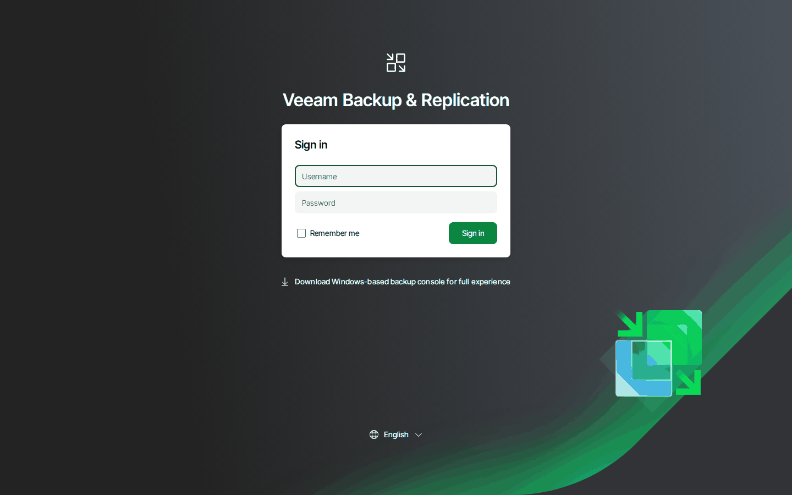
La page de connexion de l'interface web. Le lien en bas, Download Windows-based backup console for full experience, sert à l'étape 11.
Où est demandé le code MFA ?
Dans cette configuration, le code MFA n'est demandé qu'à la connexion à Host Management (étape 8) : l'interface web et la console Windows se contentent du mot de passe. Si une page de connexion demande malgré tout un code, le lire dans l'application d'authentification.
7.3 La mise à jour des composants¶
Dès la première connexion, la fenêtre Host Components Update apparaît : l'appliance configure ses composants (par exemple le serveur Samba). Laisser la fenêtre travailler, puis cliquer sur OK quand elle se termine. Dans le lab, elle s'est terminée avec le statut Warning (« All components have been upgraded with warnings ») avant l'installation de la licence, sans conséquence pour la suite. Une fenêtre d'information Web UI rappelle que l'interface web ne couvre pas encore toutes les fonctions de la console Windows : c'est pourquoi on installe cette dernière à l'étape 11.
7.4 Installer la licence¶
- 🌐 Le tableau de bord (Overview) s'affiche avec une fenêtre qui demande d'installer une licence valide : « To start using Veeam Backup & Replication web UI, please install a valid product license ». Cliquer sur Install.
- 🌐 Choisir le fichier
.licde l'étape 3.2. L'appliance l'accepte.
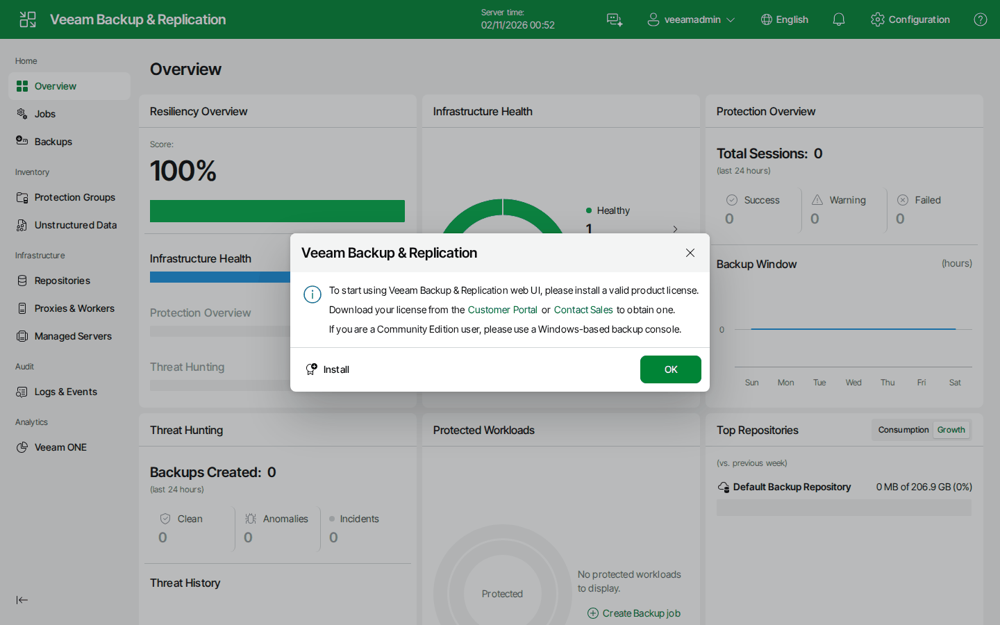
La fenêtre qui demande la licence au premier affichage du tableau de bord.
Sans licence : Community Edition, restauration seule
La fenêtre rappelle aussi : « If you are a Community Edition user, please use a Windows-based backup console ». Ne pas fermer cette fenêtre sans installer le fichier .lic : sans lui, aucune sauvegarde ne sera possible (partie 2).
7.5 Les mises à jour critiques¶
- 🌐 Après l'installation de la licence, l'appliance vérifie ses mises à jour (Checking for updates, 1 à 2 minutes dans le lab). Elle propose alors d'installer des mises à jour critiques : « The system requires critical updates to be installed. Install updates now? ». Cliquer sur Yes.
- 🌐 Les services de l'appliance redémarrent : pendant quelques minutes, l'interface peut afficher une erreur interne ou rester vide. Attendre, puis recharger la page.
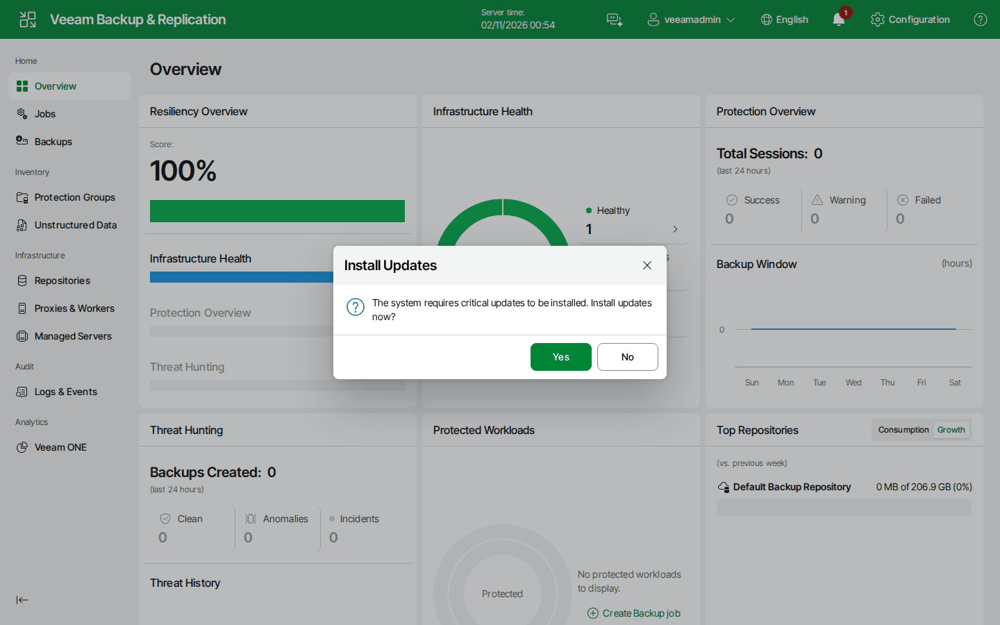
Les mises à jour critiques : répondre Yes (bonne pratique de sécurité).
Pourquoi accepter ?
Installer les mises à jour critiques dès l'installation corrige les failles connues. C'est aussi ce qui oblige la console Windows à mettre ses modules à jour à la première connexion (étape 11).
7.6 Le tableau de bord et la page Licence¶
- 🌐 Après les mises à jour, le tableau de bord Overview s'affiche. Y repérer le dépôt par défaut :
Default Backup Repository, survbr, 206,9 Go (le second disque). - 🌐 Cliquer sur Configuration (en haut à droite), puis License Information : la page indique le statut (Valid), le type (Evaluation pour une clé d'essai), le nombre d'instances (charges de travail) et la date d'expiration.
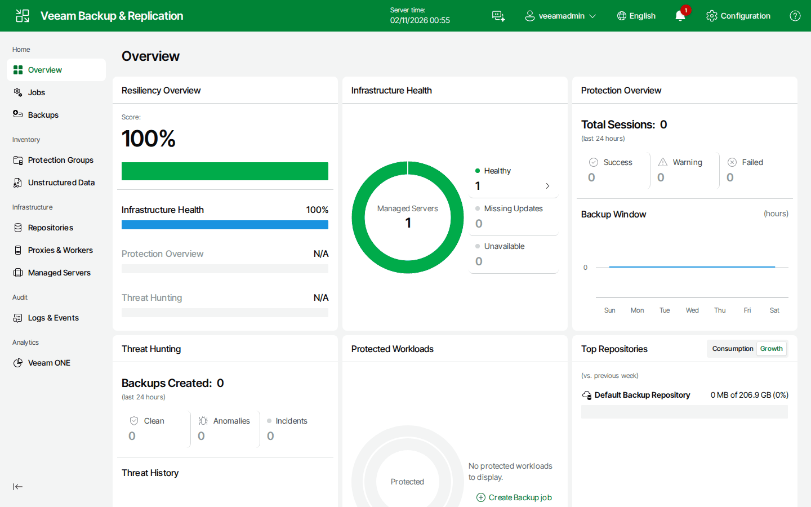
Le tableau de bord. En bas à droite, Default Backup Repository : le dépôt local créé sur le second disque.
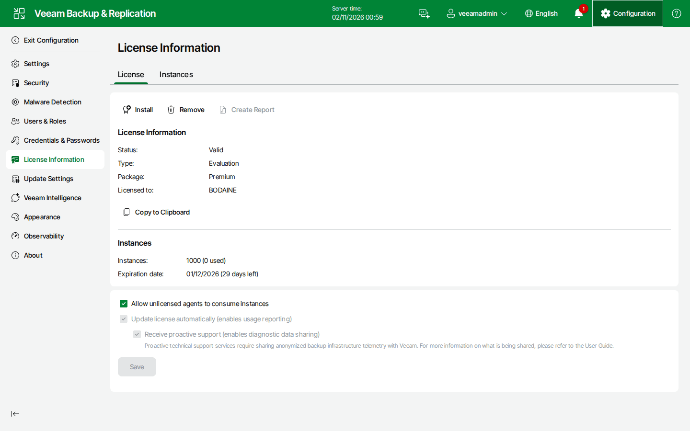
La page License Information : vérifier que le statut est Valid et noter la date d'expiration. Les valeurs dépendent de votre clé (dans le lab : 1 000 instances, expiration le 01/12/2026).
Message : « Your trial license will expire on … »
Une notification annonce la date d'expiration de la licence d'essai. C'est une information, pas une erreur. Une clé d'essai de 30 jours limite la durée de validité du lab : prévoir de finir le parcours dans ce délai.
8. Découvrir Host Management¶
Host Management est la page d'administration du système de l'appliance, distincte de l'interface web qui gère les sauvegardes. On y gère notamment le système, le réseau, l'heure, les certificats, les mises à jour, les utilisateurs et rôles et l'accès distant. Le SSH y est désactivé par défaut, et l'accès root n'est accordé que sur demande approuvée par le Security Officer. Voir la documentation officielle.
- 🌐 Aller sur
https://192.168.19.55:10443(même avertissement de certificat qu'à l'étape 7.1). - 🌐 Se connecter avec
veeamadminetPoPoPo000@@@Lab. - 🌐 La page suivante demande le code MFA : ouvrir l'application d'authentification et saisir le code à 6 chiffres affiché pour l'appliance, puis Sign in.
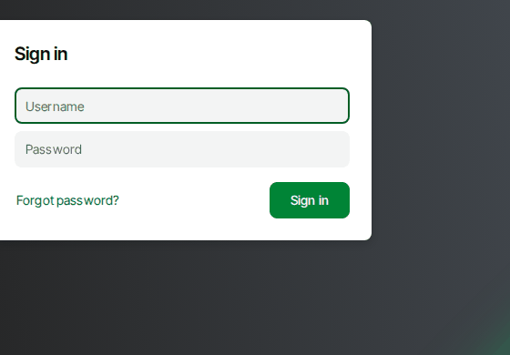
Connexion à Host Management : identifiant et mot de passe.
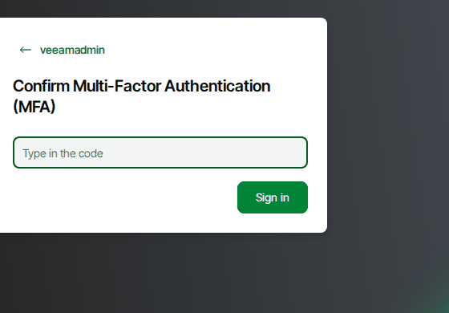
Le code MFA à 6 chiffres, calculé par l'application d'authentification.
- 🌐 La page Overview résume le système : type d'appliance, serveur SSH (Disabled), empreintes des certificats, réseau (
enp1s0,192.168.19.55), heure et serveur NTP, charge CPU et mémoire. À gauche, le menu : Network, Time, Storage, Remote Access, Users and Roles, Certificates, Backup Infrastructure, Updates, Logs and Services…
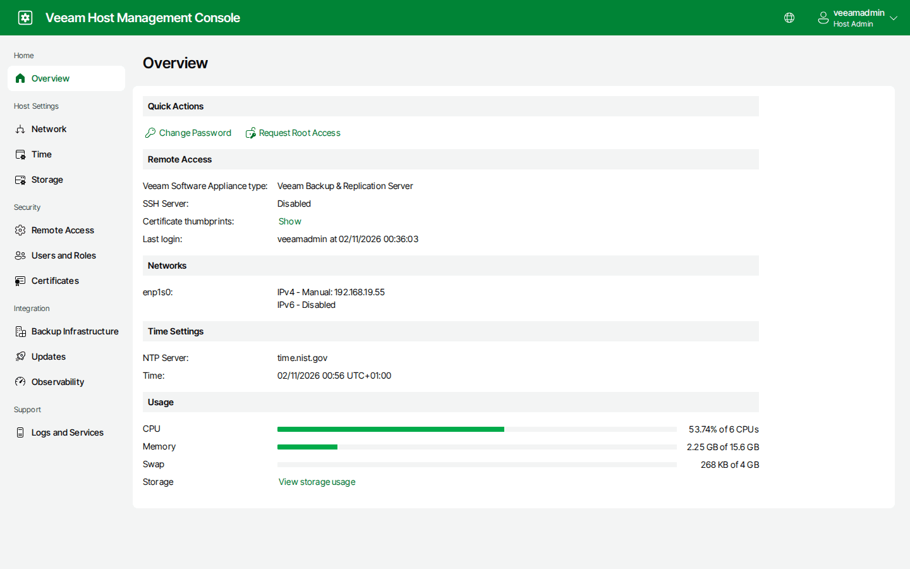
Overview : noter SSH Server : Disabled, le lien Show des empreintes de certificats, et l'utilisation des ressources.
Pourquoi le SSH est-il désactivé ?
Un accès SSH au système d'un serveur de sauvegarde est une porte d'entrée de choix pour un attaquant. L'appliance le ferme et ne l'ouvre que pour une durée limitée, sur une demande approuvée par le Security Officer (menu Remote Access). Dans ce parcours, on n'en a pas besoin : tout se fait par l'interface web, Host Management et la console.
Installer les mises à jour système
Le menu Updates de Host Management permet de rechercher et d'installer les mises à jour du système (dans le lab, l'installation affiche ses étapes : vérification et téléchargement des paquets, installation, redémarrage des services).
9. Initialiser le compte Security Officer¶
Le compte veeamso a été créé à l'assistant avec un mot de passe provisoire. Sa première connexion déclenche l'assistant Security Officer Initialization Wizard en quatre étapes : Password, Multi-Factor Authentication (MFA), Recovery Token, Configuration Backup.
- 🌐 Se déconnecter de Host Management (menu du compte
veeamadminen haut à droite), ou ouvrir une fenêtre de navigation privée, puis aller surhttps://192.168.19.55:10443. - 🌐 Se connecter avec
veeamsoetPoPoPo111@@@Lab(le mot de passe de l'assistant). - 🌐 Étape Password : l'assistant impose de changer le mot de passe (« You must change your password now »). Saisir
PoPoPo555@@@Labdeux fois, puis Next.
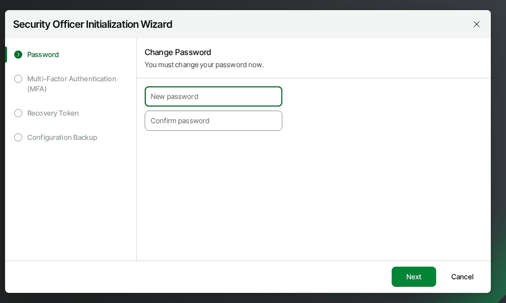
Première connexion de veeamso : le mot de passe provisoire doit être remplacé.
- 🌐 Étape Multi-Factor Authentication (MFA) : ajouter un nouveau compte dans l'application d'authentification en scannant le QR code de cette page (c'est un second secret, distinct de celui de
veeamadmin), puis saisir le code à 6 chiffres dans Enter the one-time code shown in the app. Cliquer sur Next.
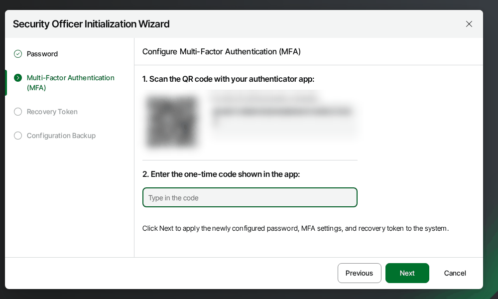
Le QR code et la clé de cet écran ont été floutés : chaque appliance génère les siens. Scanner le QR code de votre écran.
- 🌐 Étape Recovery Token : l'assistant affiche un jeton de récupération (une suite de caractères du type
xxxxxxxx-xxxx-…) qui permet de retrouver l'accès au compte si le mot de passe ou le MFA sont perdus. L'écrire sur papier ou l'enregistrer dans un gestionnaire de mots de passe, puis Next.
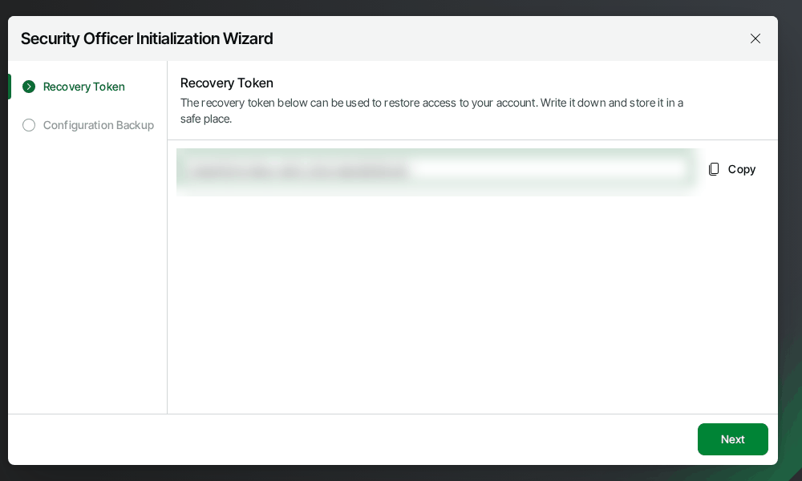
Le jeton de récupération (flouté ici) s'affiche une seule fois. À conserver hors de l'appliance.
Le jeton de récupération ne se réaffiche pas
Il est montré une seule fois. Sans lui, il peut devenir impossible de rouvrir le compte du Security Officer si le mot de passe ou le MFA sont perdus. Host Management propose, dans ses Quick Actions, l'entrée Create password recovery token pour en créer un nouveau.
- 🌐 Étape Configuration Backup : l'assistant demande une phrase secrète de sauvegarde de configuration (passphrase) et un indice (hint). Saisir
PoPoPo666@@@Lab, avec l'indicePhrase secrete du lab Veeam, puis Finish.
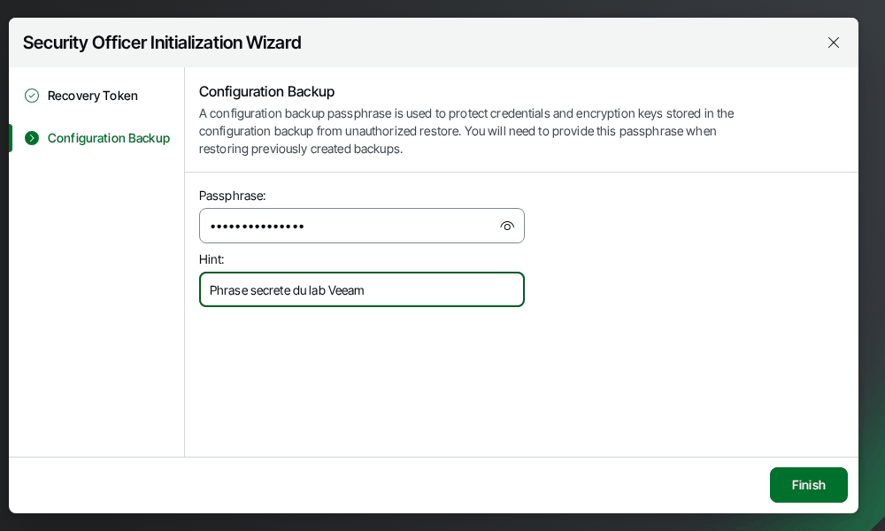
La phrase secrète de sauvegarde de configuration, avec son indice. Elle protège les mots de passe et clés de chiffrement contenus dans la sauvegarde de configuration.
- 🌐 Vérifier le résultat : dans Host Management, le menu Configuration du Security Officer affiche Configuration Backup, la date de création, l'indice Phrase secrete du lab Veeam et le lien Change Passphrase.
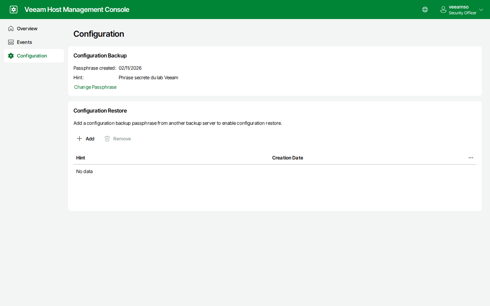
La phrase secrète est enregistrée (date, indice).
Message d'erreur si on saute cette étape : « Unable to process the configuration backup without the Security Officer's passphrase… »
En partie 5, la sauvegarde de configuration chiffrée du serveur de sauvegarde échoue si le Security Officer n'a pas créé sa phrase secrète. Le journal du lab affiche exactement :
Unable to process the configuration backup without the Security Officer's passphrase. Ask your Security Officer to configure it in the Host Management console.
Il faut alors se connecter à Host Management avec veeamso, créer la phrase secrète (cette étape 9), et relancer la sauvegarde. Autant le faire maintenant.
Pourquoi une phrase secrète en plus du mot de passe de chiffrement ?
La sauvegarde de configuration contient les identifiants et clés de chiffrement de toute l'infrastructure. Elle est chiffrée par un mot de passe choisi dans la console (Popopo444@@@ en partie 5) et liée à la phrase secrète du Security Officer : un administrateur seul ne peut pas restaurer cette configuration sans l'accord de l'officier de sécurité. Même principe des « quatre yeux » qu'à l'étape 6.7.
10. Préparer srv-fichiers¶
srv-fichiers est le serveur de fichiers Windows à protéger. Il héberge aussi la console Veeam et le navigateur du lab.
10.1 Créer la VM¶
| Réglage | Valeur |
|---|---|
| Nom | srv-fichiers |
| Système | Windows Server 2025 |
| Processeurs / mémoire | 2 vCPU, 4 Go |
| Disque 1 | 60 Go (C:) |
| Disque 2 | 40 Go (futur E:) |
| Réseau | LAN du TP pfSense |
| Démarrage | UEFI |
New Virtual Machine… > Custom, système invité Windows Server 2025 (ou Windows Server 2022 si 2025 n'est pas proposé), nom srv-fichiers, 2 processeurs, 4096 Mo. Firmware type : UEFI dans Options > Advanced. Disque de 60 Go, puis Add > Hard Disk de 40 Go. Réseau Custom : VMnet19. ISO de Windows Server.
Machine > Nouvelle, type Microsoft Windows, version Windows 2022 (64-bit), 4096 Mo, 2 processeurs, Activer EFI. Disque VDI de 60 Go dynamique, puis un second de 40 Go. Réseau privé hôte. Cocher Passer l'installation automatique : l'installation se fait à la main.
Create VM : type Microsoft Windows, version 11/2022/2025, BIOS OVMF (UEFI) avec Add EFI Disk, Machine q35. SATA pour les disques et carte réseau Intel E1000 (pour éviter d'installer les pilotes VirtIO pendant l'installation ; les pilotes VirtIO sont un choix valable pour les connaisseurs). Disques de 60 Go et 40 Go, 2 cœurs, 4096 Mo, pont vmbr19.
10.2 Installer Windows Server 2025¶
- 🪟 Démarrer la VM sur l'ISO (appuyer sur une touche au message « Press any key to boot from CD or DVD »). Choisir Français (langue, format de l'heure, clavier français), puis Suivant > Installer maintenant.
- 🪟 Si la clé de produit est demandée, cliquer sur Je n'ai pas de clé de produit (version d'évaluation).
- 🪟 Choisir Windows Server 2025 Standard (expérience de bureau) (Desktop Experience). Ne pas prendre la première ligne sans « expérience de bureau » : c'est la version sans interface graphique.
- 🪟 Accepter les termes de licence, choisir Personnalisé : installer uniquement Windows, et sélectionner le disque de 60 Go (le Lecteur 0, pas celui de 40 Go).
- 🪟 Après redémarrage, définir le mot de passe de l'Administrateur :
Popopo222@@@, puis ouvrir la session avec Ctrl+Alt+Suppr (dans la console de l'hyperviseur, utiliser son menu Envoyer Ctrl+Alt+Suppr).
Fermer l'invitation Windows Admin Center
À la première ouverture de session, le Gestionnaire de serveur démarre tout seul et affiche par-dessus une fenêtre « Essayez Windows Admin Center et Azure Arc ». Cocher Ne plus afficher ce message, puis la fermer avec la croix. Le Gestionnaire de serveur peut rester ouvert : il ne sert pas dans ce TP.
10.3 Nom, adresse IP, réseau et ping¶
- 🪟 Ouvrir Windows PowerShell en tant qu'administrateur (clic droit sur Démarrer, puis Terminal (admin) ou Windows PowerShell (admin) selon l'entrée proposée).
-
🪟 Coller le script suivant : il donne l'adresse IP fixe, passe le réseau en profil privé, autorise le ping (ICMP) et renomme le serveur, qui redémarre.
Réseau et nom de srv-fichiers# 1. Choisir la carte réseau connectée et la renommer « LAN » $nic = Get-NetAdapter | Where-Object Status -eq 'Up' | Select-Object -First 1 Rename-NetAdapter -Name $nic.Name -NewName 'LAN' $nic = Get-NetAdapter -Name 'LAN' # 2. Adresse IP fixe : pas de DHCP sur ce LAN Set-NetIPInterface -InterfaceIndex $nic.ifIndex -Dhcp Disabled New-NetIPAddress -InterfaceIndex $nic.ifIndex -IPAddress 192.168.19.22 ` -PrefixLength 24 -DefaultGateway 192.168.19.21 Set-DnsClientServerAddress -InterfaceIndex $nic.ifIndex ` -ServerAddresses 192.168.19.21,1.1.1.1 # 3. Profil réseau « privé » (le pare-feu est moins restrictif) Start-Sleep -Seconds 5 Get-NetConnectionProfile | Set-NetConnectionProfile -NetworkCategory Private # 4. Autoriser le ping entrant (règle ICMPv4) Enable-NetFirewallRule -Name FPS-ICMP4-ERQ-In # 5. Renommer le serveur et redémarrer Rename-Computer -NewName SRV-FICHIERS -Restart
Pourquoi un profil réseau privé et le ping autorisé ?
Windows classe un réseau inconnu en Public et y bloque presque tout, y compris le ping. Sur un LAN de confiance, le profil Privé s'applique à un pare-feu moins strict, et la règle ICMP permet de tester la connexion depuis les autres machines (ping 192.168.19.22). Sans elle, la vérification de fin de partie échoue sans qu'il y ait de véritable panne.
- 🪟 Après redémarrage, ouvrir une session et vérifier :
ipconfigdoit afficher192.168.19.22, etping 192.168.19.21doit répondre.
10.4 Le disque E: et les documents d'exemple¶
Le deuxième disque de 40 Go est encore vierge. Le script ci-dessous le formate en NTFS, lui donne la lettre E: et le nom DONNEES, et crée le dossier E:\Documents-importants avec quelques fichiers d'exemple (le « patrimoine » à protéger en partie 5). Le disque F: est ajouté en partie 4 : ne pas le créer ici.
Message : « New-Partition : The requested access path is already in use »
La lettre E: est déjà prise, en général par le lecteur DVD d'un second ISO ou de l'ISO d'installation encore monté. Dans le lab, un second lecteur CD occupait E: : le retirer de la VM (ou éjecter l'ISO dans l'hyperviseur), redémarrer Windows, puis relancer le script. La commande Get-Volume montre les lettres déjà utilisées.
-
🪟 Dans PowerShell (admin), coller :
prep-fichiers.ps1 : disque E: et documents d'exemple$ErrorActionPreference = 'Stop' # 1. Repérer le disque de données : ni le disque système (n° 0), ni un disque déjà partitionné $d = Get-Disk | Where-Object { $_.Number -ne 0 -and ( $_.PartitionStyle -eq 'RAW' -or ((Get-Partition -DiskNumber $_.Number -ErrorAction SilentlyContinue | Where-Object Type -eq 'Basic').Count -eq 0)) } | Select-Object -First 1 # 2. Le formater : GPT, une seule partition NTFS, lettre E:, nom DONNEES if ($d) { if ($d.PartitionStyle -eq 'RAW') { Initialize-Disk -Number $d.Number -PartitionStyle GPT } New-Partition -DiskNumber $d.Number -UseMaximumSize -DriveLetter E | Format-Volume -FileSystem NTFS -NewFileSystemLabel 'DONNEES' -Confirm:$false | Out-Null } # 3. Les documents « très importants » à protéger $base = 'E:\Documents-importants' foreach ($s in 'Comptabilite','Contrats','Ressources-humaines') { New-Item -ItemType Directory -Force -Path "$base\$s" | Out-Null } Set-Content "$base\Comptabilite\factures-2026.csv" ` "Numero;Client;Montant`nF2026-001;Boulangerie Martin;1250,00`nF2026-002;Garage Durand;3480,50`nF2026-003;Cabinet Leroy;890,00" -Encoding UTF8 Set-Content "$base\Comptabilite\bilan-previsionnel.txt" ` "Bilan previsionnel 2026 - document confidentiel" -Encoding UTF8 Set-Content "$base\Contrats\contrat-maintenance-2026.txt" ` "Contrat de maintenance informatique - signe le 05/01/2026" -Encoding UTF8 Set-Content "$base\Ressources-humaines\planning-conges.csv" ` "Salarie;Debut;Fin`nAlice;2026-07-15;2026-08-05`nBruno;2026-08-01;2026-08-20" -Encoding UTF8 # 4. Contrôle Get-Volume -DriveLetter E | Format-Table DriveLetter,FileSystemLabel,FileSystem,Size -AutoSize Get-ChildItem -Recurse $base | Format-Table FullName,Length -AutoSize -
🪟 Vérifier :
E:apparaît dans l'Explorateur de fichiers sous le nom DONNEES, et contientDocuments-importantsavec trois sous-dossiers.
Pourquoi un script ?
Le formatage se ferait aussi dans Gestion des disques (diskmgmt.msc) à la souris. Le script a l'avantage d'être reproductible et de produire des fichiers connus d'avance : en partie 5, on supprimera l'un d'eux pour le restaurer, et il faudra le reconnaître.
11. Installer la console Windows sur srv-fichiers¶
La console Windows (Veeam Backup & Replication Console) est le programme historique de Veeam. On la télécharge depuis l'appliance elle-même, ce qui garantit une version identique. Elle reste nécessaire pour certaines fonctions que l'interface web 13.1 ne couvre pas encore.
- 🪟 Ouvrir Microsoft Edge sur
srv-fichiers, aller surhttps://192.168.19.55, accepter l'avertissement de certificat (étape 7.1). - 🪟 Sur la page de connexion, cliquer sur le lien Download Windows-based backup console for full experience (en bas). Le fichier
VeeamBackup&ReplicationConsole_13.1.2.57.exe(environ 2 Go) est téléchargé dans le dossier Téléchargements. Dans le lab, la copie a pris moins d'une minute sur le réseau local.
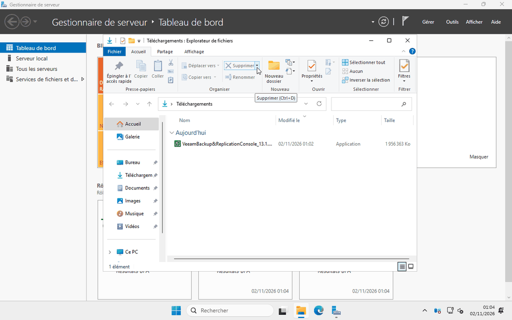
L'installeur de la console, téléchargé depuis l'appliance.
- 🪟 Double-cliquer sur le fichier. Dans l'assistant : accepter le contrat (I Accept), laisser le programme vérifier la configuration (il active les composants Windows manquants), puis Install. L'installation a pris environ 7 minutes dans le lab. Terminer avec Finish. Si un redémarrage est demandé, l'accepter et relancer l'installeur.
- 🪟 Lancer Veeam Backup & Replication Console depuis le menu Démarrer.
- 🪟 Dans Specify backup server, saisir
192.168.19.55à la place delocalhost, puis Connect.
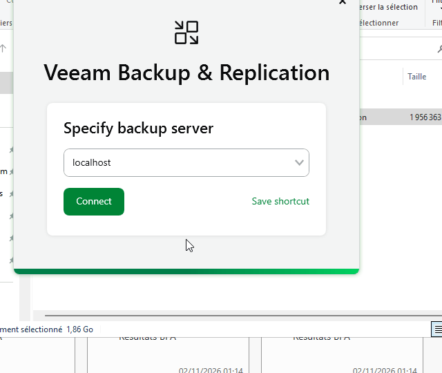
Remplacer localhost par 192.168.19.55.
- 🪟 Une fenêtre Untrusted server certificate apparaît : « Server 192.168.19.55 has an untrusted certificate ». Avant de cliquer sur Yes, vérifier l'empreinte : passer la souris sur Copy fingerprints to clipboard ou View certificate pour afficher l'empreinte SHA256, puis la comparer à celle de l'écran final de l'appliance (étape 6.8). Les premiers caractères doivent correspondre (
A263ED…dans le lab).
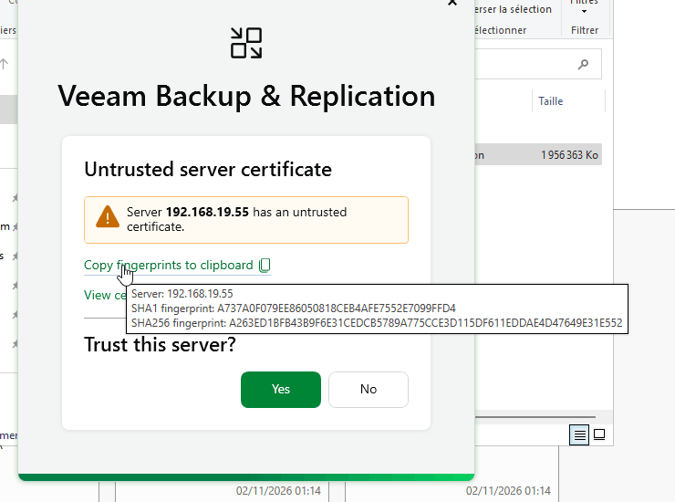
L'empreinte SHA256 (A263ED…E552 dans le lab) est identique à celle de l'écran final de l'appliance : on parle bien à vbr.
Pourquoi comparer l'empreinte ?
Le certificat est auto-signé, la console ne peut donc pas le vérifier seule. Si un intrus se plaçait entre srv-fichiers et l'appliance (attaque de l'homme du milieu), il présenterait un autre certificat, donc une autre empreinte. Comparer les deux empreintes, c'est l'équivalent de vérifier une pièce d'identité. En lab on la contrôle une fois par principe ; en production, c'est un vrai contrôle de sécurité.
- 🪟 Cliquer sur Yes, puis se connecter avec
veeamadminetPoPoPo000@@@Lab(Sign in). - 🪟 La console demande une mise à jour de ses modules (« Plug-ins update is required ») : cliquer sur Update (environ 164 Mo dans le lab, suite à la mise à jour critique de l'appliance). La console revient à l'écran de connexion : se reconnecter avec les mêmes identifiants.
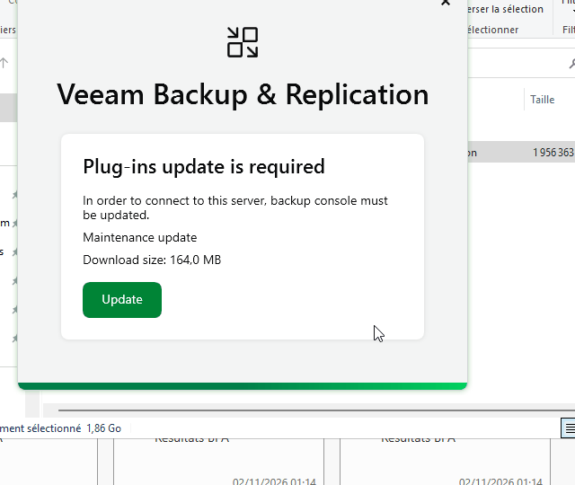
Les modules de la console doivent correspondre à la version de l'appliance.
- 🪟 La console s'ouvre sur l'écran Home. Une fenêtre peut rappeler l'expiration de la licence d'essai : cliquer sur OK.
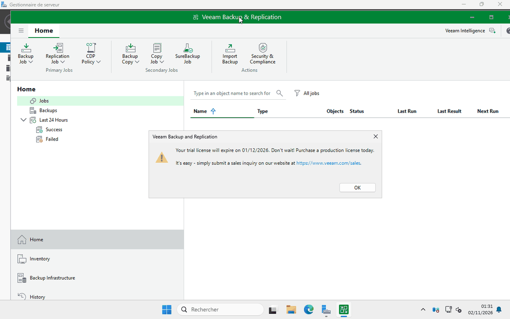
La console ouverte sur vbr depuis srv-fichiers.
12. Préparer srv-debian¶
srv-debian est le serveur Linux qui sera sauvegardé puis restauré en partie 6.
12.1 Créer la VM¶
| Réglage | Valeur |
|---|---|
| Nom | srv-debian |
| Système | Debian 13 (64 bits) |
| Processeurs / mémoire | 2 vCPU, 2 Go |
| Disque | 20 Go |
| Démarrage | BIOS ou UEFI sans Secure Boot |
| Réseau | LAN du TP pfSense |
Pas de Secure Boot sur srv-debian
L'agent de sauvegarde de Veeam pour Linux utilise un module noyau non signé par une clé que Secure Boot reconnaît. Avec Secure Boot actif, ce module est refusé ou demande d'enregistrer une clé (MOK, procédure de la partie 6). Pour que la partie 6 se passe sans détour, désactiver Secure Boot sur cette VM.
New Virtual Machine… > Custom, système invité Debian 12.x 64-bit (ou Debian 11.x 64-bit à défaut), 2 processeurs, 2048 Mo, disque de 20 Go, réseau Custom : VMnet19. Laisser le Firmware type sur BIOS (valeur par défaut, aucun réglage de Secure Boot).
Machine > Nouvelle, type Linux, version Debian (64-bit), 2048 Mo, 2 processeurs, disque VDI de 20 Go dynamique. Ne pas cocher Activer EFI (BIOS par défaut). Réseau privé hôte.
Create VM : type Linux, version 6.x - 2.6 Kernel, BIOS SeaBIOS (par défaut : pas d'UEFI, donc pas de Secure Boot), 2 cœurs, 2048 Mo, disque de 20 Go, carte réseau VirtIO sur vmbr19.
12.2 Installer Debian 13¶
- 🐧 Démarrer sur l'ISO netinst de Debian 13 et choisir Install (installation en mode texte, pas l'installation graphique).
- 🐧 Langue : Français. Pays : France. Clavier : Français.
-
🐧 Configuration du réseau : l'installeur cherche un serveur DHCP, qui n'existe pas sur ce LAN. Quand il échoue, choisir Configurer le réseau manuellement et saisir :
Question Réponse Adresse IP 192.168.19.170Masque de réseau 255.255.255.0Passerelle 192.168.19.21Serveurs de noms 192.168.19.21 1.1.1.1(séparés par une espace)Nom de machine srv-debianDomaine laisser vide -
🐧 Mot de passe du superutilisateur (root) : laisser vide (deux fois). Debian désactive alors la connexion
rootet donne au premier utilisateur le droit d'utilisersudo. - 🐧 Compte utilisateur : nom complet
user, identifiantuser, mot de passePopopo333@@@. - 🐧 Fuseau horaire : Paris. Partitionnement : Assisté - utiliser un disque entier, le disque de 20 Go, Tout dans une seule partition, puis terminer et valider l'écriture sur le disque.
- 🐧 Miroir : France,
deb.debian.org, sans proxy. Étude statistique (popularity-contest) : Non. - 🐧 Sélection des logiciels : décocher « environnement de bureau Debian » et « GNOME » (ou tout autre bureau), cocher serveur SSH et utilitaires usuels du système (standard system utilities), puis Continuer.
- 🐧 GRUB : accepter l'installation sur le disque. À la fin, Continuer pour redémarrer ; éjecter l'ISO si l'hyperviseur le propose.
Pourquoi root sans mot de passe ?
C'est une bonne pratique : personne ne peut se connecter en root directement (ni par SSH, ni à la console). Pour une tâche d'administration, on fait sudo devant la commande, avec le mot de passe de user. Cela laisse une trace de qui a fait quoi, et réduit la surface d'attaque. Veeam en aura besoin en partie 6 pour installer l'agent.
12.3 Vérifier l'accès SSH¶
-
🐧 Ouvrir la session sur la console de la VM :
user/Popopo333@@@. Vérifier l'adresse et la sortie vers Internet :
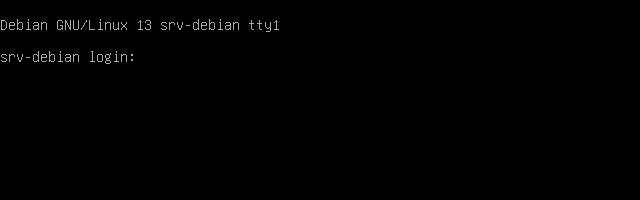
Le premier démarrage de srv-debian : l'invite de connexion indique la version 13 et le nom srv-debian.
-
🖥️ Depuis un terminal du PC hôte (ou, sous Proxmox, depuis
srv-fichierssi l'outilsshy est présent), se connecter en SSH :Accepter l'empreinte de la machine (
yes), saisirPopopo333@@@, puis vérifier le droitsudo:
Résultat attendu
La commande sudo whoami renvoie root. L'invite SSH affiche user@srv-debian. Si ssh refuse la connexion (« Connection refused »), le paquet openssh-server n'est pas installé : l'installer avec sudo apt install openssh-server.
13. Vérification de fin de partie¶
Avec les quatre VM allumées (pfsense-19, vbr, srv-fichiers, srv-debian), dérouler la vérification.
| # | Test | Depuis | Commande ou action | Résultat attendu |
|---|---|---|---|---|
| 1 | Ping de la passerelle | 🪟 srv-fichiers |
ping 192.168.19.21 |
Réponses |
| 2 | Ping de l'appliance | 🪟 srv-fichiers |
ping 192.168.19.55 |
Réponses (le ping est ouvert sur l'appliance) |
| 3 | Ping du serveur de fichiers | 🐧 srv-debian |
ping -c 2 192.168.19.22 |
Réponses (règle ICMP activée à l'étape 10.3) |
| 4 | Ping de Debian | 🪟 srv-fichiers |
ping 192.168.19.170 |
Réponses |
| 5 | Interface web | 🌐 | https://192.168.19.55 |
Page de connexion, puis le tableau de bord |
| 6 | Licence | 🌐 | Configuration > License Information | Statut Valid |
| 7 | Host Management | 🌐 | https://192.168.19.55:10443 |
Connexion veeamadmin + code MFA |
| 8 | Security Officer | 🌐 | veeamso dans Host Management |
Configuration Backup indique une phrase secrète créée |
| 9 | Console | 🪟 srv-fichiers |
Console Veeam, serveur 192.168.19.55 |
Écran Home |
| 10 | SSH | 🖥️ | ssh user@192.168.19.170, puis sudo whoami |
root |
| 11 | Disque de données | 🪟 srv-fichiers |
Get-Volume -DriveLetter E |
DONNEES, NTFS |
Résultat attendu
Les onze tests réussissent. Si l'un échoue, reprendre l'étape correspondante avant de continuer : la partie 4 suppose un lab sain.
Le ping vers 192.168.19.22 ne répond pas
Presque toujours, la règle ICMP n'est pas active sur Windows (profil réseau Public au lieu de Privé). Revenir à l'étape 10.3 : Get-NetConnectionProfile doit afficher NetworkCategory : Private, et Get-NetFirewallRule -Name FPS-ICMP4-ERQ-In | Select Enabled doit afficher True.
🛟 Instantané 01-lab-pret¶
Éteindre proprement les trois VM vbr, srv-fichiers et srv-debian (et pfsense-19, de préférence, pour garder un lab cohérent), puis prendre sur chacune un instantané nommé 01-lab-pret. Il permet de recommencer les parties 4, 5 et 6 avec un lab propre.
VM > Snapshot > Take Snapshot…, nom 01-lab-pret, sur chaque VM éteinte.
Onglet Instantanés de la VM (menu Machine > Outils > Instantanés) puis Prendre, nom 01-lab-pret, sur chaque VM éteinte.
VM sélectionnée > Snapshots > Take Snapshot, nom lab-pret-01, l'équivalent de 01-lab-pret : Proxmox exige qu'un nom d'instantané commence par une lettre et ne contienne ensuite que des lettres, des chiffres, - et _ (40 caractères au plus). Le snapshot Proxmox dépend du stockage choisi : avec un stockage qui ne le gère pas (certains répertoires bruts), utiliser une sauvegarde de la VM à la place.
Un instantané n'est pas une sauvegarde
L'instantané reste sur le même disque que la VM : voir l'encadré de la page d'accueil du parcours.
Reprendre le travail
Rallumer ensuite pfsense-19, vbr et les autres machines pour continuer. La partie 4 demande pfsense-19, vbr et srv-fichiers.
14. Questions de révision¶
- Quelle entrée du menu de démarrage de l'ISO est sélectionnée par défaut, et pourquoi faut-il la changer pour une première installation ?
- Pourquoi le mot de passe
Popopo000@@@est-il refusé par l'appliance ? - Pourquoi l'heure exacte de l'appliance est-elle indispensable à l'authentification multifacteur ?
- Pourquoi préférer le QR code à la saisie manuelle de la clé secrète MFA ?
- Que se passe-t-il si l'on n'installe pas de licence sur l'appliance ?
- À quoi sert le compte Security Officer, et que se passe-t-il en partie 5 si sa phrase secrète n'a pas été créée ?
- Pourquoi compare-t-on l'empreinte du certificat à celle de l'écran de l'appliance avant de se connecter avec la console ?
- Pourquoi désactive-t-on Secure Boot sur
srv-debianmais pas survbr?
Corrigé
- Reinstall : elle conserve les sauvegardes et ne fait que réinstaller le système. Pour une première installation, il faut Install, qui installe à neuf et efface les disques.
- Il contient 5 minuscules à la suite (« opopo ») et fait moins de 15 caractères, ce que la politique DISA STIG de l'appliance interdit.
PoPoPo000@@@Labrespecte toutes les règles. - Les codes TOTP sont calculés à partir d'un secret partagé et de l'heure (un code toutes les 30 secondes). Si l'horloge de l'appliance dérive, ses codes ne correspondent plus à ceux du téléphone : ils sont refusés. D'où le serveur NTP et le bon fuseau.
- Dans la police de la console, la lettre O ressemble à un D : une clé recopiée à la main peut être fausse, et les codes calculés ensuite aussi. Le QR code transmet la clé exacte.
- L'appliance fonctionne en Community Edition : elle ne permet que la restauration de données existantes, aucune nouvelle sauvegarde.
- Le Security Officer approuve les actions sensibles de l'administrateur (principe des quatre yeux). Sans sa phrase secrète de sauvegarde de configuration, la sauvegarde de configuration chiffrée échoue avec « Unable to process the configuration backup without the Security Officer's passphrase… ».
- Le certificat est auto-signé, donc non vérifiable automatiquement. Un attaquant placé entre les deux machines présenterait un autre certificat, donc une autre empreinte : la comparaison garantit qu'on se connecte bien à
vbr. - Sur
vbr, le système est celui de Veeam, signé et accepté avec Secure Boot. Sursrv-debian, l'agent Veeam installe un module noyau que Secure Boot refuserait ou obligerait à signer (clé MOK) : le désactiver évite ce détour en partie 6.
Ressources¶
- Exigences système du serveur de sauvegarde Veeam Backup & Replication 13 — matériel de l'appliance (section « Linux-Based Backup Server (Veeam Software Appliance) »).
- Installer la Veeam Software Appliance depuis l'ISO — le déroulé de l'assistant de configuration initiale.
- Configurer le compte Security Officer à l'installation — l'étape Security Officer de l'assistant.
- Veeam Host Management — le rôle de la console d'administration du système.
- Installer la console Veeam — installation de la console Windows.
- Téléchargements Veeam — ISO de l'appliance et licence d'essai (compte gratuit).
- TP : cluster de pare-feux pfSense en haute disponibilité — le réseau du lab.
- Partie précédente : Découvrir Veeam Data Platform · Partie suivante : Ajouter des dépôts de sauvegarde.